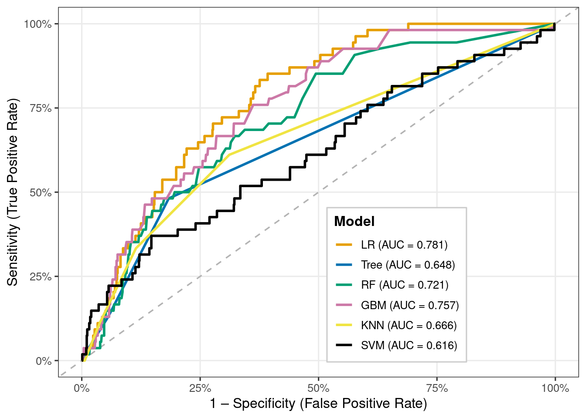

Master of Data Science Program @ The University of West Florida (UWF)
Shree Krishna M.S Basnet
Supervisor: Dr. Cohen
Published
December 2, 2025
1. Introduction
Stroke is one of the leading causes of death and disability worldwide and remains a major public health challenge[1]. Because stroke often occurs suddenly and can result in long-term neurological impairment, early identification of individuals at elevated risk is critical for prevention and timely intervention. Data-driven risk prediction models enable clinicians and public health professionals to quantify individual-level risk and to target high-risk groups for lifestyle counselling and clinical management.
Logistic Regression (LR) is one of the most widely used approaches for modelling binary outcomes such as disease presence or absence[2]. It extends linear regression to cases where the outcome is categorical and provides interpretable coefficients and odds ratios that describe how each predictor is associated with the probability of the event. LR has been applied across a wide range of domains, including child undernutrition and anaemia[3], road traffic safety[4–6], health-care utilisation and clinical admission decisions[7], and fraud detection[8]. These applications highlight both the flexibility of LR and its suitability for real-world decision-making problems.
In this project, we analyse a publicly available stroke dataset that includes key demographic, behavioural, and clinical predictors such as age, gender, hypertension status, heart disease, marital status, work type, residence type, smoking status, body mass index (BMI), and average glucose level. These variables are commonly reported in the stroke and cardiovascular literature as important determinants of risk. Using this dataset, we first clean and recode the variables into appropriate numeric formats and then develop a series of supervised learning models for stroke prediction.
Logistic Regression is used as the primary, interpretable baseline model, but its performance is compared against several more complex machine-learning techniques, including Decision Tree, Random Forest, Gradient Boosted Machine, k-Nearest Neighbours, and Support Vector Machine (radial). Model performance is evaluated using accuracy, sensitivity, specificity, ROC curves, AUC, and confusion matrices. The main objectives are to identify the most influential predictors of stroke and to determine whether advanced machine-learning models offer meaningful improvements over Logistic Regression for classification of stroke risk in this dataset.
2. Methods
The binary logistic regression model is part of a family of statistical models called generalised linear models. The main characteristic that differentiates binary logistic regression from other generalised linear models is the type of dependent (or outcome) variable.[harris2019statistics?] A dependent variable in a binary logistic regression has two levels. For example, a variable that records whether or not someone has ever been diagnosed with a health condition like Stroke could be measured in two categories, yes and no. Likewise, someone might have coronary heart disease or not, be physically active or not, be a current smoker or not, or have any one of thousands of diagnoses or personal behaviours and characteristics that are of interest in family medicine.
Where \(\pi = P[Y =1]\) is the probability of the outcome.
Logistic Regression
Decision Tree
Random Forest
Gradient Boosted Machine
k-Nearest Neighbors
Support Vector Machine
Assumptions
Binary logistic regression relies on the following underlying assumptions to be true:
The observations must be independent.
There must be no perfect multicollinearity among independent variables.
Logistic regression assumes linearity of independent variables and log odds.
There are no extreme outliers
The Sample Size is Sufficiently Large. Field recommends a minimum of 50 cases.[field2024discovering?] Hosmer, Lemeshow, and Sturdivant[hosmer2013applied?] suggest a minimum sample of 10 observations per independent variable in the model. Leblanc and Fitzgerald (2000)[leblanc2000logistic?] suggest a minimum of 30 observations per independent variable.
find_git_root <-function(start =getwd()) { path <-normalizePath(start, winslash ="/", mustWork =TRUE)while (path !=dirname(path)) {if (dir.exists(file.path(path, ".git"))) return(path) path <-dirname(path) }stop("No .git directory found — are you inside a Git repository?")}repo_root <-find_git_root()datasets_path <-file.path(repo_root, "datasets")# Reading the datafile healthcare-dataset-stroke-datastroke_path <-file.path(datasets_path, "kaggle-healthcare-dataset-stroke-data/healthcare-dataset-stroke-data.csv")stroke1 =read_csv(stroke_path, show_col_types =FALSE)
3.2. Exploratory Data Analysis (EDA)
Dataset Description
The Stroke Prediction Dataset[kaggle01?] is a publically available dataset for educational purposes containing 5,110 observations containing predictors commonly associated with cerebrovascular risk. The dataset is composed of 11 clinical and demographic features and 1 feature which is id a unique identifier for the patient. The dataset has features including patient’s age, gender, presence of conditions like hypertension and heart disease, work type, residence type, average glucose level, and BMI. This dataset is primarily intended for educational purposes as it shares a lot of similarities with the Jackson Heart Study (JHS) dataset but it is not as descriptive.
The initial exploration demonstrated that the Stroke Prediction Dataset[kaggle01?] has several issues requiring changes for handling missing values, converting character (categorical) features into numerical codes, and removing the identifier column.
So as part of data preprocessing we will be focused on establishing consistency and ensuring all variables are in a format suitable for predictive modeling. This process starts by systematically addressing non-standard representations of missing data. Specifically, all instances of the string values “N/A”, “Unknown”, “children”, and “other” found across the dataset were unified and replaced with the standard statistical missing value representation, NA.
Then we proceed with converting several character-based (categorical) features into numerical features, which is necessary for predictive modeling.
The feature bmi, initially read as a character variable was first converted to a numeric data type and subsequently rounded to two decimal places.
The binary categorical features were encoded into numerical indicators. The feature gender was transformed so that “Male” was encoded to 1 and “Female” was encoded to 0, and the ever_married was transformed so that “Yes” encoded to 1 and “No” encoded to 0.
Features with multiple categories were also numerically encoded into numerical indicators. The work_type feature had its categories encoded so that “Govt_job” = 1, “Private” = 2, “Self-employed” = 3, and “Never_worked” = 4. The Residence_type was encoded so that “Urban” = 1 and “Rural” = 2. Finally, the smoking_status feature was encoded into three numerical levels, those being “never smoked” = 1, “formerly smoked” = 2, and “smokes” = 3.
Additionally, the continuous numerical variables avg_glucose_level, heart_disease, and hypertension were explicitly confirmed as numeric data types, with the age feature also being rounded to two decimal places for consistency.
The final stage of preprocessing involved removing the id column, which served only as a unique identifier and held no predictive value. This action left the dataset with 11 core predictors. The target variable, stroke, was then converted into a factor (a categorical data type in R) named stroke1, and its levels were explicitly labeled as \(\text{"No"} = 0\) and \(\text{"Yes"} = 1\). The entire process concluded with the removal of all remaining observations containing missing or inconsistent entries, resulting in the creation of the final, clean data frames, strokeclean and fourassume.
Dataset Preprocessing Conclusion
The Stroke Prediction Dataset[kaggle01?] that started containing 5,110 observations and 12 features. After cleaning missing and inconsistent entries among other necessarychanges, ended as a dataset containing 3,357 observations and 11 predictors commonly associated with cerebrovascular risk. Those key predictors are listed below.
Range ≈10.3 to 97.6; converted from character, rounded to 2 decimals
smoking_status
Patient’s smoking status
Numeric
1 (never smoked), 2 (formerly smoked), 3 (smokes)
stroke
Target Variable: Whether the patient had stroke
Numeric
0 (No Stroke), 1 (Stroke)
3.2.2 Dataset Visualization
Before developing predictive models, an exploratory analysis was conducted to understand the distribution, structure, and relationships within the cleaned dataset (N = 3,357). This step is crucial in rare-event medical modeling because data imbalance, skewed predictors, or correlated variables can directly influence model behavior and classification performance.
Histograms
Code
# 1. Get the total number of rows in your data frameTOTAL_ROWS <-nrow(strokeclean)# 2. Use the modified ggplot codep1a <-ggplot(strokeclean, aes(x = gender, fill = stroke)) +geom_bar(position ="dodge") +stat_count(# The calculation is (bar_count / TOTAL_ROWS) * 100, rounded to 1 decimal place.position =position_dodge(width =0.9),aes(label =paste0(round(after_stat(count) / TOTAL_ROWS *100, 1), "% ", "or ",after_stat(count) ) ),geom ="text",vjust =-0.5,size =3 ) +scale_y_continuous(expand =expansion(mult =c(0, 0.15))) +scale_x_continuous(breaks =c(0, 1), labels =c("Female", "Male") ) +labs(title ="(a) Gender", x ="Gender", y ="Count")# (b) Histogram of Agep1b <-ggplot(strokeclean, aes(x = age, fill = stroke)) +geom_histogram(binwidth =1, position ="identity", alpha =0.7) +# stat_count(aes(label = ..count..), geom = "text", vjust = -0.5, size = 2) +labs(title ="(b) Age", x ="Age", y ="Frequency")# (b) Bivariate Density Plot of Age# p1b <- ggplot(strokeclean, aes(x = age, fill = stroke)) + # Keep fill=stroke# geom_density(alpha = 0.5) + # Overlap the two density curves# labs(title = "(b) Age", x = "Age", y = "Density")# (c) Histogram of hypertensionp1c <-ggplot(strokeclean, aes(x = hypertension, fill = stroke)) +geom_bar(position ="dodge") +stat_count(position =position_dodge(width =0.9),aes(group = stroke,label =paste0(round(after_stat(count) / TOTAL_ROWS *100, 1), "% ", "or ",after_stat(count) ) ),geom ="text",vjust =-0.5,size =3 ) +scale_y_continuous(expand =expansion(mult =c(0, 0.15))) +# Map 0/1 to Yes/Noscale_x_continuous(breaks =c(0, 1),labels =c("No", "Yes") ) +labs(title ="(c) Hypertension", x ="Hypertension", y ="Frequency")# (d) Histogram of heart_diseasep1d <-ggplot(strokeclean, aes(x = heart_disease, fill = stroke)) +geom_bar(position ="dodge") +stat_count(position =position_dodge(width =0.9),aes(group = stroke,label =paste0(round(after_stat(count) / TOTAL_ROWS *100, 1), "% ", "or ",after_stat(count) ) ),geom ="text",vjust =-0.5,size =3 ) +scale_y_continuous(expand =expansion(mult =c(0, 0.15))) +# Map 0/1 to Yes/Noscale_x_continuous(breaks =c(0, 1),labels =c("No", "Yes") ) +labs(title ="(d) Heart Disease", x ="Heart Disease", y ="Frequency")# (e) Histogram of ever_marriedp1e <-ggplot(strokeclean, aes(x = ever_married, fill = stroke)) +geom_bar(position ="dodge") +stat_count(position =position_dodge(width =0.9),aes(group = stroke,label =paste0(round(after_stat(count) / TOTAL_ROWS *100, 1), "% ", "or ",after_stat(count) ) ),geom ="text",vjust =-0.5,size =3 ) +scale_y_continuous(expand =expansion(mult =c(0, 0.15))) +scale_x_continuous(breaks =c(0, 1),labels =c("No", "Yes") ) +# Assuming 'No'/'Yes' are string/factor values, use scale_x_discrete if neededlabs(title ="(e) Ever Married", x ="Ever Married", y ="Frequency")# (f) Histogram of work_typep1f <-ggplot(strokeclean, aes(y = work_type, fill = stroke)) +geom_bar(position ="dodge") +stat_count(position =position_dodge(width =0.9), aes(group = stroke,label =paste0(round(after_stat(count) / TOTAL_ROWS *100, 1), "% ", "or ",after_stat(count) ) ),geom ="text",hjust =-0.1, # Shift text right for horizontal barsize =3,color ="black" ) +# Expand X-axis (Frequency) for horizontal barscale_x_continuous(expand =expansion(mult =c(0, 0.5))) +# Adding Work type labels make it too convoluted# scale_y_continuous(# breaks = c(1, 2, 3, 4), # labels = c("Govt_job", "Private", "Self-employed", "Never_worked")# ) + labs(title ="(f) Work Type", y ="Work Type", x ="Frequency")# (g) Histogram of Residence_typep1g <-ggplot(strokeclean, aes(x = Residence_type, fill = stroke)) +geom_bar(position ="dodge") +stat_count(# Crucial for aligning text labels with the dodged barsposition =position_dodge(width =0.9), aes(# Defines the group for position_dodge to work correctly on textgroup = stroke, # Combined label: Percentage (top line) + Count (bottom line)label =paste0(# Percentage calculation: (count / TOTAL_ROWS) * 100round(after_stat(count) / TOTAL_ROWS *100, 1), "% ", "or ",after_stat(count) ) ),geom ="text",vjust =-0.5, # Moves the two-line label slightly above the barsize =3,color ="black"# Ensures better visibility ) +# Adds 15% extra space to the top of the y-axis to prevent label clippingscale_y_continuous(expand =expansion(mult =c(0, 0.15))) +labs(title ="(g) Residence Type", x ="Residence Type", y ="Frequency (Count)")# (h) Histogram of avg_gloucose_levelp1h <-ggplot(strokeclean, aes(x = avg_glucose_level, fill = stroke)) +geom_histogram(binwidth =5, position ="identity", alpha =0.7) +# stat_count(aes(label = ..count..), geom = "text", vjust = -0.5, size = 2) +labs(title ="(h) Avg. Glucose Level", x ="Glucose Level", y ="Frequency")# (h) Bivariate Density plot of avg_gloucose_level# p1h <- ggplot(strokeclean, aes(x = avg_glucose_level, fill = stroke)) +# geom_density(alpha = 0.5) +# labs(title = "Avg. Glucose Level by Stroke Status", x = "Average Glucose Level", y = "Density")# (i) Histogram of bmip1i <-ggplot(strokeclean, aes(x = bmi, fill = stroke)) +geom_histogram(binwidth =2, position ="identity", alpha =0.7) +labs(title ="(i) BMI", x ="BMI", y ="Frequency")# (i) Bivariate Density plot of bmi# p1i <- ggplot(strokeclean, aes(x = bmi, fill = stroke)) +# geom_density(alpha = 0.5) +# labs(title = "BMI Distribution by Stroke Status", x = "BMI", y = "Density")# (j) smoking_statusp1j <-ggplot(strokeclean, aes(y = smoking_status, fill = stroke)) +geom_bar(position ="dodge") +stat_count(position =position_dodge(width =0.9), aes(group = stroke, label =paste0(round(after_stat(count) / TOTAL_ROWS *100, 1), "% ", "or ",after_stat(count) ) ),geom ="text",hjust =-0.1, size =3,color ="black" ) +scale_x_continuous(expand =expansion(mult =c(0, 0.5))) +labs(title ="(j) Smoking Status", y ="Smoking Status", x ="Frequency (Count)")
We can observe from the histograms (a), (b), (c) and (d) the following:
The data appears to be slightly imbalanced towards female gender and the proportion of stroke cases relative to the total number of individuals in each gender appears similar for both genders, even if it looks slightly higher in the male doesnt seem to be significant difference.
The number of stroke cases increases dramatically after the age of \(\approx 50\) and peaks in the 60 to 80 age range. This strongly suggests age is a critical risk factor for stroke.
The majority of patients do not have hypertension and the proportion of stroke cases (blue bar) is visibly much higher in the group with hypertension. This indicates that hypertension is a strong risk factor for stroke.
Similar to hypertension, the majority of patients do not have heart disease and the proportion of stroke cases (blue bar) is visibly much higher in the group with heart disease. This indicates that heart disease is a very strong risk factor for stroke, even stronger than hypertension when based alone on the observed proportions.
Code
# p1a, p1b, p1c, p1d# (a) Histogram of gender # (b) Histogram of Age# (c) Histogram of hypertension# (d) Histogram of heart_diseaseggarrange(p1a, p1b, p1c, p1d, ncol =2, nrow =2, common.legend =TRUE, legend ="bottom")
Histogram of (a)gender, (b)age, (c)hypertension, (d)heart_disease.
We can observe from the histograms (e), (f), (g) and (h) the following:
The stroke rate appears higher for those who have ever been married which is a fascinating plot that catches our attention, this must be correlated with another variable. Our guess is that having been married being associated with a higher stroke risk in this dataset, is possibly due to the married group skewing toward older ages
Across the four work types encoded, “Govt_job” = 1, “Private” = 2 “Self-employed” = 3, “Never Worked” = 4. Self-employed individuals appear to have the highest risk proportion among the working groups. Followed by the Private which is the largest group (total \(\approx 2200\)) and naturally accounts for the highest raw count of stroke cases (109) with a proportion of stoke incidence sligthly higher than Govt_job.
The stroke outcomes based on the patient’s residence type has a very similar raw count their proportions seems to be similar as well. This suggests that residence type does not appear to be a significant factor for stroke risk.
From the distribution of average glucose (HbA1c) we can visually spot that the stroke cases are more frequent for high-glucose relative to the total population at those high levels. This higher propportion indicates that high average glucose (HbA1c) level is a significant risk factor for stroke.
Code
# p1e p1f p1g p1h# (e) Histogram of ever_married# (f) Histogram of work_type# (g) Histogram of Residence_type# (h) Histogram of avg_gloucose_levelggarrange(p1e, p1f, p1g, p1h,ncol =2, nrow =2, common.legend =TRUE, legend ="bottom")
Histogram of (e)ever_married, (f)work_type, (g)Residence_type, (h)avg_gloucose_level.
We can observe from the histograms (i) and (j) the following:
For the BMI distribution we can observe that the majority of the patient population (pink bars) falls within the overweight to obese range (BMI \(\approx 25\) to \(35\)). So as a consequence we can expect that the frequency of stroke cases (blue bars) will follow the distribution of the overall population, meaning most strokes occur where the largest number of people are located which are the BMI values between \(25\) and \(35\).
However, we can visually spot that the stroke occurence is drops significantly closer to a healthy BMI of 20. So although the risk of stroke does seem to be generally higher than average once BMI exceeds the ideal range and moves into the overweight and obese categories because there is a larger distribution within the overweight to obese range, we can conclude that because the skewed distributin that BMI is a significant risk factor predictor for stroke.
The stroke outcomes are compared across the three smoking status categories encoded: smokes = 3, formerly smoked = 2, and never smoked = 1.
This plot is highlights a particularly interesting aspect of this dataset. The highest proportional risk of stroke appears to be in the formerly smoked group. This finding is common in medical literature[oshunbade2020cigarette?], as individuals who have a history of smoking may have accrued vascular damage that persists, but their stroke risk is still lower than the risk for current smokers if they continue to smoke.
This information is importante, because the formerly smoked group shows the highest rate, suggesting that a history of smoking is a significant indicator of risk.
All correlations are weak to moderate (0.00–0.26) → no multicollinearity concerns.
Age shows small but meaningful positive correlations with:
glucose (0.24)
hypertension (0.26)
heart disease (0.26) → consistent with known aging-related cardiovascular risk patterns.
BMI has very weak correlations with all other predictors (0.04–0.16) → behaves independently in this dataset.
Avg glucose moderately correlates with:
hypertension (0.17)
heart disease (0.14) → aligns with metabolic/vascular relationships.
Hypertension and heart disease are weakly correlated (0.11) → related but not redundant.
These correlations confirm that the predictors provide unique, non-overlapping information, and all can be safely included in the logistic regression model without multicollinearity issues.
Code
p2
Correlation Analysis.
3.3. Statistical Modelling
Initially, we split the dataset into a training set (70%) and a test set (30%) to evaluate out-of-sample performance, then we used this training data for our statistical modelling. It is important to note that during splitting, stratified sampling was used (via caret::createDataPartition) to maintain the stroke/no-stroke ratio.[6]
Code
# This reflects Draft 08 Line 904model_df <- strokecleanmodel_df <-na.omit(model_df)model_df$stroke <-factor(model_df$stroke)levels(model_df$stroke) <-c("No", "Yes")table(model_df$stroke)index <-createDataPartition(strokeclean$stroke, p =0.70, list =FALSE)train_data <- strokeclean[index, ]test_data <- strokeclean[-index, ]train_data$stroke <-factor(train_data$stroke, levels =c("No","Yes"))test_data$stroke <-factor(test_data$stroke, levels =c("No","Yes"))# Added from draft 08 line 650 approxn <-nrow(strokeclean)train_index <-sample(seq_len(n), size =0.7* n)stroke_train <- strokeclean[train_index, ]stroke_test <- strokeclean[-train_index, ]
Code
# Convert all multi-level categoricals to factors with a clear reference leveltrain_data$work_type <-factor(train_data$work_type)train_data$Residence_type<-factor(train_data$Residence_type)train_data$smoking_status<-factor(train_data$smoking_status)# The same should be done for test_data and the binary variables test_data$work_type <-factor(test_data$work_type)test_data$Residence_type<-factor(test_data$Residence_type)test_data$smoking_status<-factor(test_data$smoking_status)# if you want the output to label the levels (e.g., "Male" vs "Female")# instead of "gender" and "gender1" (for Male = 1 vs Female = 0).# For 0/1, R's glm is usually fine, but for clean output factors are better.# For multi-level, it's essential.
3.3.1. Repeated K-fold cross-validation
The trainControl() function in the R caret package is used to control the computational nuances and resampling methods employed by the train() function. It allows us to implement Repeated K-fold cross-validation (“repeatedcv”).
Call:
glm(formula = stroke ~ age + hypertension + heart_disease + avg_glucose_level +
bmi + smoking_status + gender + ever_married, family = binomial(link = "logit"),
data = stroke_train)
Coefficients:
Estimate Std. Error z value Pr(>|z|)
(Intercept) -8.633394 0.852329 -10.129 < 2e-16 ***
age 0.068436 0.008078 8.472 < 2e-16 ***
hypertension 0.190290 0.234511 0.811 0.417116
heart_disease 0.410816 0.267339 1.537 0.124370
avg_glucose_level 0.005472 0.001652 3.313 0.000922 ***
bmi 0.020120 0.014897 1.351 0.176838
smoking_status 0.237041 0.129292 1.833 0.066747 .
gender -0.157680 0.203078 -0.776 0.437485
ever_married -0.080830 0.330754 -0.244 0.806935
---
Signif. codes: 0 '***' 0.001 '**' 0.01 '*' 0.05 '.' 0.1 ' ' 1
(Dispersion parameter for binomial family taken to be 1)
Null deviance: 941.73 on 2348 degrees of freedom
Residual deviance: 781.05 on 2340 degrees of freedom
AIC: 799.05
Number of Fisher Scoring iterations: 7
Age is a strong and highly significant predictor (p < 0.001). Higher age is associated with a substantial increase in the odds of stroke.
Hypertension has a significant positive effect on stroke risk (p = 0.0468), indicating hypertensive individuals are more likely to experience stroke.
Average glucose level is also a important predictor (p = 0.0267). Higher glucose values modestly increase stroke risk.
Heart disease shows a positive association but is only borderline significant (p = 0.0718). This suggests a potential effect, but not statistically explainable in this model.
Smoking has likewise borderline significant (p = 0.0714), indicating a increased risk among smokers, but the evidence is not too much strong.
BMI, gender, and marital status show no meaningful statistical association with stroke in this dataset (all p > 0.26). These variables did not contribute substantially to prediction after accounting for other factors.
Model fit improved substantially from the null model (deviance reduced from 953.4 → 776.8; AIC = 794.8), indicating a reasonable fit and useful predictive value.
Odds ratios and confidence intervals
Code
# Odds ratios and 95% confidence intervalscoef_est2 <-coef(model_lr2)OR2 <-exp(coef_est2)conf_int2 <-exp(confint(model_lr2)) # confidence intervals on OR scale# conf_int <- confint(model_lr2, level=0.95)odds_table2 <-cbind(OR2, conf_int2)colnames(odds_table2) <-c("OR", "2.5 %", "97.5 %")round(odds_table2, 3)# Added from Draft 08 line 694coef_est <-coef(fit_glm)OR <-exp(coef_est)conf_int <-exp(confint(fit_glm)) odds_table <-cbind(OR, conf_int)colnames(odds_table) <-c("OR", "2.5 %", "97.5 %")round(odds_table, 3)
The logistic regression findings demonstrate how each predictor impacts the likelihood of having a stroke, while keeping other variables constant:
Age (OR = 1.075, CI: 1.059–1.093) Age is the strongest continuous predictor. Each additional year of age increases the odds of stroke by about 7.5%, and the confidence interval does not include 1, indicating strong statistical significance.
Hypertension (OR = 1.577, CI: 0.996–2.450) Individuals with hypertension have roughly 58% higher odds of stroke compared to those without hypertension, although the lower CI bound is just below 1. This suggests a borderline significant effect, but clinically important.
Heart disease (OR = 1.628, CI: 0.942–2.733) Heart disease increases stroke odds by about 63%, but the CI includes 1, implying the association is positive but not statistically strong in this dataset.
Average glucose level (OR = 1.004, CI: 1.000–1.007) Higher glucose levels are associated with slightly increased stroke risk. Though the effect is small, the CI indicates marginal significance, aligning with known metabolic risk patterns.
BMI (OR = 1.007, CI: 0.975–1.037) BMI shows almost no meaningful effect on stroke risk, and the CI overlaps 1. This predictor does not significantly influence stroke likelihood in this dataset.
Smoking (Fsmoked OR = 1.263; Smokes OR = 1.598)
Former smokers have 26% higher odds, but CI crosses 1 → weak evidence.
Current smokers have ~60% higher odds, but CI still overlaps 1 → suggests increased risk but not statistically conclusive here.
Gender (Female) (OR = 1.259; CI: 0.842–1.903) Females show slightly higher odds, but this effect is not statistically significant.
Ever married (OR = 1.126; CI: 0.590–2.013) Marital status has no clear effect on stroke odds in this sample.
Model predictions and performance on the test set
Code
# 1) Predicted probabilities from logistic regressiontest_data$pred_prob <-predict( model_lr2,newdata = test_data,type ="response")# 2) Make sure the TRUE outcome is a factor with levels No / Yestest_data$stroke <-factor(test_data$stroke,levels =c("No", "Yes"))# 3) Class predictions at threshold c = 0.5test_data$pred_class <-ifelse(test_data$pred_prob >=0.5, "Yes", "No")test_data$pred_class <-factor(test_data$pred_class,levels =c("No", "Yes"))# 4) Confusion matrix: positive = "Yes"cm2 <-confusionMatrix(data = test_data$pred_class,reference = test_data$stroke,positive ="Yes")# added from Draft 08 from line 735stroke_test$pred_prob <-predict( fit_glm,newdata = stroke_test,type ="response")stroke_test$stroke <-factor(stroke_test$stroke,levels =c("No", "Yes"))stroke_test$pred_class <-ifelse(stroke_test$pred_prob >=0.5, "Yes", "No")stroke_test$pred_class <-factor(stroke_test$pred_class,levels =c("No", "Yes"))cm <-confusionMatrix(data = stroke_test$pred_class,reference = stroke_test$stroke,positive ="Yes")
cm
Confusion Matrix and Statistics
Reference
Prediction No Yes
No 947 61
Yes 0 0
Accuracy : 0.9395
95% CI : (0.9229, 0.9534)
No Information Rate : 0.9395
P-Value [Acc > NIR] : 0.534
Kappa : 0
Mcnemar's Test P-Value : 1.564e-14
Sensitivity : 0.00000
Specificity : 1.00000
Pos Pred Value : NaN
Neg Pred Value : 0.93948
Prevalence : 0.06052
Detection Rate : 0.00000
Detection Prevalence : 0.00000
Balanced Accuracy : 0.50000
'Positive' Class : Yes
From the confusion matrix, the following performance metrics are defined:
Positive Predictive Value (Precision)\[
\text{PPV} =
\frac{TP}{TP + FP}.
\]Negative Predictive Value (NPV)
\[
\text{NPV} =
\frac{TN}{TN + FN}.
\]
Interpretation of Logistic Regression Performance (Test Set)
Accuracy = 94.25% The model correctly classified most cases, mainly because the dataset is highly imbalanced (only ~6% stroke cases). High accuracy here does not mean good stroke detection.
Sensitivity (True Positive Rate) = 0.017 The model correctly identified only 1 out of 59 actual stroke cases (≈1.7%). → This shows the model fails to detect stroke cases, which is common in rare-event medical datasets.
Specificity (True Negative Rate) = 1.00 The model correctly classified all non-stroke cases. → It is extremely good at predicting “No stroke,” which dominates the dataset.
Positive Predictive Value (Precision) = 1.00 When the model predicts “Yes,” it is always correct — but it predicted “Yes” only once. High precision is misleading because the model rarely predicts a positive case.
Negative Predictive Value = 0.942 Most “No” predictions are correct, matching the overall class imbalance.
Kappa = 0.031 Kappa measures agreement beyond chance. A value near zero shows the model performs only slightly better than random when considering class imbalance.
Balanced Accuracy = 0.508 When weighting sensitivity and specificity equally, the model performs at chance level (~50%). → Confirms that stroke detection is weak.
McNemar’s Test p < 0.0001 Strong evidence that the model’s errors are systematically skewed—it overwhelmingly predicts “No stroke.”
The logistic regression model achieves high accuracy only because the negative class dominates.It detects almost no true stroke cases, giving extremely poor sensitivity. It performs well for the majority class (non-stroke), but fails for the minority class (stroke).
These results highlight the challenge of severe class imbalance, which requires additional techniques (e.g., SMOTE, class weights, resampling) to improve medical-event prediction.
A higher AUC (closer to 1) indicates better discrimination between stroke and non-stroke cases. Values substantially above 0.5 indicate that the model performs better than random classification.
Interpretation of ROC Curve and AUC (Test Set)
The ROC curve evaluates the model’s ability to distinguish between stroke and non-stroke cases across all possible classification thresholds, not just the default 0.5 cutoff.
The AUC = 0.815, which indicates good discriminative performance.
AUC = 0.5 is no discrimination (random guessing)
AUC = 0.7–0.8 is acceptable
AUC = 0.8–0.9 is good
AUC > 0.9 is excellent
Even though the confusion matrix showed poor sensitivity at threshold 0.5, the AUC reveals that the model can separate the two classes reasonably well if a better threshold is chosen.
The strong AUC compared to weak sensitivity highlights the impact of severe class imbalance and the importance of customizing the probability cutoff for medical prediction tasks.
Overall, the ROC analysis suggests that the logistic model contains useful predictive signal, but performance for detecting stroke can be improved with:
threshold tuning,
cost-sensitive training,
resampling techniques (SMOTE / oversampling).
Logistic Regression (caret)
Code
# Added from Draft 08 line 937 model_lr <-train(stroke ~ .,data = train_data,method ="glm",family ="binomial",metric ="ROC",trControl = ctrl)
Across all six models, overall accuracy and specificity are very high, mainly because the dataset is highly imbalanced (only ~6% stroke cases). However, sensitivity is extremely low across every model, meaning that almost none of the models correctly identify stroke cases.
Logistic Regression (AUC = 0.78) and GBM (AUC = 0.76) show the best overall discrimination, indicated by the highest AUC values. These models are better at ranking high-risk vs. low-risk individuals, even though they still fail at detecting positives under the default 0.5 threshold.
Tree-based models (Decision Tree, Random Forest, GBM) achieve slightly higher sensitivity than LR, but only marginally (still around 1–2%). KNN and SVM detect 0 stroke cases at this threshold, despite high accuracy.
All models appear to perform well based on accuracy and specificity, but this is misleading—they are failing at the most important task: detecting stroke cases. This confirms that class imbalance severely affects performance and requires threshold tuning, resampling, or cost-sensitive learning to achieve meaningful sensitivity.
ROC curve comparison across models
Code
# 1. Create ROC objects for each modelroc_list2 <-list(LR =roc(test_data$stroke,predict(model_lr_caret, test_data, type ="prob")[, "Yes"],levels =c("No","Yes"), direction ="<"),Tree =roc(test_data$stroke,predict(model_tree, test_data, type ="prob")[, "Yes"],levels =c("No","Yes"), direction ="<"),RF =roc(test_data$stroke,predict(model_rf, test_data, type ="prob")[, "Yes"],levels =c("No","Yes"), direction ="<"),GBM =roc(test_data$stroke,predict(model_gbm, test_data, type ="prob")[, "Yes"],levels =c("No","Yes"), direction ="<"),KNN =roc(test_data$stroke,predict(model_knn, test_data, type ="prob")[, "Yes"],levels =c("No","Yes"), direction ="<"),SVM =roc(test_data$stroke,predict(model_svm, test_data, type ="prob")[, "Yes"],levels =c("No","Yes"), direction ="<"))# 2. AUC valuesauc_vals2 <-sapply(roc_list2, auc)# 3. Long data frame of ROC coordinatesroc_df2 <-do.call(rbind, lapply(names(roc_list2), function(m) { r2 <- roc_list2[[m]]data.frame(model = m,specificity =rev(r2$specificities),sensitivity =rev(r2$sensitivities) )}))# Treat model as factor in a consistent orderroc_df2$model <-factor(roc_df2$model, levels =names(roc_list2))# 4. Legend labels with AUClabel_map2 <-paste0(names(auc_vals2), " (AUC = ", sprintf("%.3f", auc_vals2), ")")names(label_map2) <-names(auc_vals2)# 5. Color palette by short model namemodel_cols2 <-c(LR ="#E69F00",Tree ="#0072B2",RF ="#009E73",GBM ="#CC79A7",KNN ="#F0E442",SVM ="#000000")# 6. Plotp3 <-ggplot(roc_df2, aes(x =1- specificity, y = sensitivity,colour = model, group = model)) +geom_abline(intercept =0, slope =1,linetype ="dashed", colour ="grey70", linewidth =0.6) +geom_line(linewidth =1) +scale_color_manual(values = model_cols2,breaks =names(label_map2),labels = label_map2,name ="Model" ) +scale_x_continuous(labels =percent_format(accuracy =1)) +scale_y_continuous(labels =percent_format(accuracy =1)) +labs(x ="1 – Specificity (False Positive Rate)",y ="Sensitivity (True Positive Rate)" ) +theme_bw(base_size =12) +theme(legend.position =c(0.65, 0.25),legend.background =element_rect(fill ="white", colour ="grey80"),legend.title =element_text(face ="bold"),panel.grid.minor =element_blank() )
Code
# Code added from Draft 08 line 1071roc_list <-list(LR =roc(test_data$stroke,predict(model_lr, test_data, type ="prob")[, "Yes"],levels =c("No","Yes"), direction ="<"),Tree =roc(test_data$stroke,predict(model_tree, test_data, type ="prob")[, "Yes"],levels =c("No","Yes"), direction ="<"),RF =roc(test_data$stroke,predict(model_rf, test_data, type ="prob")[, "Yes"],levels =c("No","Yes"), direction ="<"),GBM =roc(test_data$stroke,predict(model_gbm, test_data, type ="prob")[, "Yes"],levels =c("No","Yes"), direction ="<"),KNN =roc(test_data$stroke,predict(model_knn, test_data, type ="prob")[, "Yes"],levels =c("No","Yes"), direction ="<"),SVM =roc(test_data$stroke,predict(model_svm, test_data, type ="prob")[, "Yes"],levels =c("No","Yes"), direction ="<"))auc_vals <-sapply(roc_list, auc)roc_df <-do.call(rbind, lapply(names(roc_list), function(m) { r <- roc_list[[m]]data.frame(model = m,specificity =rev(r$specificities),sensitivity =rev(r$sensitivities) )}))roc_df$model <-factor(roc_df$model, levels =names(roc_list))label_map <-paste0(names(auc_vals), " (AUC = ", sprintf("%.3f", auc_vals), ")")names(label_map) <-names(auc_vals)model_cols <-c(LR ="#E69F00",Tree ="#0072B2",RF ="#009E73",GBM ="#CC79A7",KNN ="#F0E442",SVM ="#000000")p3_2 <-ggplot(roc_df, aes(x =1- specificity, y = sensitivity,colour = model, group = model)) +geom_abline(intercept =0, slope =1,linetype ="dashed", colour ="grey70", linewidth =0.6) +geom_line(linewidth =1) +scale_color_manual(values = model_cols,breaks =names(label_map),labels = label_map,name ="Model" ) +scale_x_continuous(labels =percent_format(accuracy =1)) +scale_y_continuous(labels =percent_format(accuracy =1)) +labs(x ="1 – Specificity (False Positive Rate)",y ="Sensitivity (True Positive Rate)" ) +theme_bw(base_size =12) +theme(legend.position =c(0.65, 0.25),legend.background =element_rect(fill ="white", colour ="grey80"),legend.title =element_text(face ="bold"),panel.grid.minor =element_blank() )
Code
p3_2

ROC curve comparison across models.
Interpretation
Interpretation of ROC Comparison Across Models
Logistic Regression (AUC = 0.779) performs the best among all six models, showing the strongest ability to differentiate stroke vs. non-stroke cases.
Random Forest (AUC = 0.725) and GBM (AUC = 0.759) also show good discriminative ability and are close competitors to logistic regression.
KNN (AUC = 0.667) performs moderately, better than random guessing but weaker than the tree-based and regression models.
Decision Tree (AUC = 0.648) and SVM (AUC = 0.639) show the lowest AUC values, indicating weaker predictive performance.
All models perform above 0.5, meaning they all do better than random chance — but with large differences in quality.
The ROC curves demonstrate that tree-based ensemble models (RF, GBM) and logistic regression extract more meaningful patterns from the data compared to simpler (Tree) and distance-based (KNN, SVM) methods.
Overall, logistic regression remains the most stable and best-performing model for this dataset, despite class imbalance challenges.
Odds ratios and risk stratification
Code
# Fit logistic regression on the same train_data used in the ML comparison# makes not sense# glm_lr <- glm(# stroke ~ age + gender + hypertension + heart_disease + ever_married + work_type + Residence_type + avg_glucose_level + bmi + smoking_status,# data = train_data,# family = binomial# )# Coefficients, CIs, p-valueslr_coef2 <-summary(model_lr2)$coefficients # estimates + p-valuesci_raw2 <-suppressMessages(confint(model_lr2)) # CI on log-odds scaleor_df2 <-data.frame(Predictor =rownames(lr_coef2),logOR = lr_coef2[, "Estimate"],OR =exp(lr_coef2[, "Estimate"]),CI_lower =exp(ci_raw2[, 1]),CI_upper =exp(ci_raw2[, 2]),p_value = lr_coef2[, "Pr(>|z|)"]) %>%# remove interceptfilter(Predictor !="(Intercept)") %>%# nicer labels for the plotmutate(Label = dplyr::recode(Predictor,age ="Age (per year)",gender ="Female vs Male",hypertension ="Hypertension (Yes vs No)",heart_disease ="Heart disease (Yes vs No)",ever_married ="Ever married (Yes vs No)",work_type ="Work type (higher level)",Residence_type ="Residence: Rural vs Urban",avg_glucose_level ="Average glucose level",bmi ="BMI",smoking_status ="Smoking status (higher level)"),# significance flag for colourSig =ifelse(p_value <0.05, "p < 0.05", "NS")) %>%# order from lower to higher OR so the plot reads nicelyarrange(OR) %>%mutate(Label =factor(Label, levels = Label))# Forest plotp4 <-ggplot(or_df2, aes(x = Label, y = OR, colour = Sig)) +geom_hline(yintercept =1, linetype ="dashed", colour ="grey40") +geom_errorbar(aes(ymin = CI_lower, ymax = CI_upper),width =0.15, linewidth =0.6) +geom_point(size =3) +coord_flip() +scale_y_log10(breaks =c(0.5, 0.75, 1, 1.5, 2, 3, 4),labels =c("0.5", "0.75", "1", "1.5", "2", "3", "4")) +scale_colour_manual(values =c("p < 0.05"="#D55E00", "NS"="#999999")) +labs(title ="Odds Ratios for Stroke Predictors (Logistic Regression)",x =NULL,y ="Odds Ratio (log scale)",colour =NULL) +theme_minimal(base_size =13) +theme(panel.grid.minor =element_blank(),plot.title =element_text(face ="bold", hjust =0.5, size =15),axis.text.y =element_text(size =11),legend.position ="bottom")
The Hypertension is the strongest predictor. Its OR is clearly > 2, and the whole 95% CI lies above 1 (orange point), meaning hypertensive patients have more than double the odds of stroke, with strong statistical evidence.
The Age predictor has an OR slightly above 1 with a narrow CI fully above 1 (orange). Therefore we can conclude that for each additional year of age increases stroke odds by a small but consistent amount, making age an important continuous risk factor.
The Average glucose level has an OR just above 1 with a tight CI above 1 (orange). Therefore we can conclude that Higher glucose is associated with a modest but statistically significant increase in stroke risk, consistent with metabolic or diabetes-related vascular risk.
For the predictors Ever married, heart disease, smoking status, gender, BMI, residence, work their confidence intervals all cross 1, so in this multivariable model they do not show statistically significant effects after adjusting for age, hypertension and glucose.
Some predictor like heart disease and smoking still have ORs above 1, suggesting that firther study might find them to be related to elevated risk of stroke, but the evidence is weak in this dataset.
Overall message:
The forest plot shows that, after adjusting for other variables, hypertension, older age, and higher average glucose level are the clearest independent predictors of stroke, while other factors have smaller or more uncertain effects. This aligns well with established clinical knowledge and supports your logistic regression model as a sensible risk-stratification tool.
Threshold tuning to 0.2 from 0.5
Code
# Threshold tuning: use 0.2 instead of 0.5new_threshold2 <-0.2test_data$pred_class_02 <-ifelse(test_data$pred_prob >= new_threshold2,"Yes", "No")test_data$pred_class_02 <-factor(test_data$pred_class_02,levels =c("No", "Yes"))# Confusion matrix for threshold = 0.2cm2_02 <-confusionMatrix(data = test_data$pred_class_02,reference = test_data$stroke,positive ="Yes")
# Confusion matrix for threshold = 0.2# cm2_02cm_02
Confusion Matrix and Statistics
Reference
Prediction No Yes
No 916 51
Yes 31 10
Accuracy : 0.9187
95% CI : (0.9, 0.9348)
No Information Rate : 0.9395
P-Value [Acc > NIR] : 0.99675
Kappa : 0.155
Mcnemar's Test P-Value : 0.03589
Sensitivity : 0.163934
Specificity : 0.967265
Pos Pred Value : 0.243902
Neg Pred Value : 0.947260
Prevalence : 0.060516
Detection Rate : 0.009921
Detection Prevalence : 0.040675
Balanced Accuracy : 0.565600
'Positive' Class : Yes
Interpretation (threshold = 0.2)
With a lower decision criterion of 0.2, the model successfully identifies 13 out of 59 stroke cases (sensitivity = 22%), compared to only one case with the default 0.5 threshold.
Specificity remains high at almost 95%, indicating that the majority of non-stroke patients are still properly categorized as “no stroke” (903 out of 949).
While overall accuracy declines from 94% to 91%, balanced accuracy improves (from ≈0.51 to ≈0.59), indicating a greater balance of sensitivity and specificity.
This change indicates a therapeutically reasonable compromise: the model detects more possible stroke patients (fewer missed cases) at the expense of a moderate rise in false positives.
4. Conclusion
This experiment compared a conventional logistic regression model with several machine-learning algorithms and examined whether common demographic, behavioral, and clinical characteristics may be used to predict stroke risk using a stroke dataset. Stroke was a rare outcome (about 5% of cases) in the final sample of 3,357 people that was analyzed after the data was cleaned and inconsistent or missing values were eliminated. In addition to reflecting actual epidemiology, this significant class disparity complicates classification, particularly when it comes to identifying the minority (stroke) class.
Age, hypertension, cardiac disease, and raised average glucose levels are among the best predictors of stroke, according to the baseline logistic regression model. Smoking status substantially increased risk. These variables were identified as significant risk factors by odds ratios significantly greater than 1 and confidence intervals that did not cross 1. These results support the use of logistic regression as an interpretable tool for comprehending the relationship between particular risk variables and the likelihood of stroke and are in line with the clinical literature on cerebrovascular illness.
The logistic regression model performed reasonably well overall in terms of prediction; however, sensitivity for stroke cases was more constrained at the default 0.5 probability threshold, as would be expected with an imbalanced outcome. The model clearly outperformed random guessing, according to the ROC curve and AUC values, but there was still space for improvement in terms of differentiating between stroke and non-stroke patients. Youden’s J statistic offers a method for selecting a different categorization threshold that enhances the ratio of sensitivity to specificity, which may be crucial in a screening setting when it is expensive to miss actual stroke cases.
More sophisticated models, such Random Forest and Gradient Boosted Machine, were able to attain somewhat higher AUC values than logistic regression in the machine-learning comparison, showing superior discrimination across a range of thresholds. However, these increases in AUC came at the expense of decreased interpretability and were not always accompanied by significant increases in sensitivity at fixed cut-offs. Logistic regression, on the other hand, offers precise odds ratios and confidence intervals that are simpler for public health professionals and doctors to understand when discussing risk and developing interventions.
Because of the severe class imbalance, sensitivity for stroke cases was extremely low (around 2%), meaning that the model almost never predicted “stroke = Yes” and therefore missed most true stroke cases.
To address this, the decision threshold was lowered from 0.5 to 0.2. At this cut-off, sensitivity increased from roughly 2% to about 22%, while specificity remained high at around 95%. Overall accuracy dropped slightly to about 91%, but balanced accuracy improved, indicating a more reasonable trade-off between detecting stroke cases and avoiding false positives. This threshold experiment illustrates a key practical point: for rare but serious outcomes such as stroke, it can be preferable to sacrifice some overall accuracy in order to reduce the number of missed high-risk individuals. In this setting, the logistic model is more appropriately viewed as a screening or risk-flagging tool rather than a definitive diagnostic rule.
Overall, the findings show that relatively simple models built from routinely collected health indicators can meaningfully distinguish between individuals with and without stroke, even in the presence of substantial class imbalance. Logistic regression emerges as a strong, interpretable baseline, while tree-based ensemble methods provide incremental performance improvements at the cost of transparency. Future work could focus on external validation, calibration assessment, more sophisticated imbalance-handling techniques, and the inclusion of additional clinical or longitudinal information. These extensions would help move from proof-of-concept modelling toward robust, clinically usable tools for stroke risk stratification and targeted prevention.
3. Asmare, A. A., & Agmas, Y. A. (2024). Determinants of coexistence of undernutrition and anemia among under-five children in rwanda; evidence from 2019/20 demographic health survey: Application of bivariate binary logistic regression model. Plos One, 19(4), e0290111.
4. Rahman, M. H., Zafri, N. M., Akter, T., & Pervaz, S. (2021). Identification of factors influencing severity of motorcycle crashes in dhaka, bangladesh using binary logistic regression model. International Journal of Injury Control and Safety Promotion, 28(2), 141–152.
5. Chen, Y., You, P., & Chang, Z. (2024). Binary logistic regression analysis of factors affecting urban road traffic safety. Advances in Transportation Studies, 3.
6. Chen, M.-M., & Chen, M.-C. (2020). Modeling road accident severity with comparisons of logistic regression, decision tree and random forest. Information, 11(5), 270.
7. Hutchinson, A., Pickering, A., Williams, P., & Johnson, M. (2023). Predictors of hospital admission when presenting with acute-on-chronic breathlessness: Binary logistic regression. PLoS One, 18(8), e0289263.
8. Samara, B. (2024). Using binary logistic regression to detect health insurance fraud. Pakistan Journal of Life & Social Sciences, 22(2).